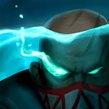
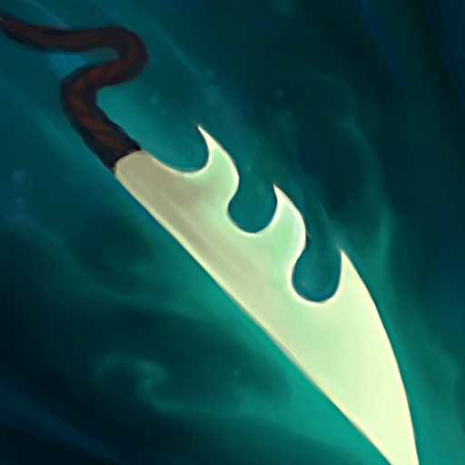

Pyke
EL DESTRIPADOR DEL MUELLE ROJO

Pasiva:Don de los ahogados

La vida máxima de Pyke no puede aumentar excepto a través de crecimiento (por nivel), en su lugar gana 「 1 de DA adicional por 14 de vida adicional 」.
Pyke también almacena el 10% (+ 0.25% por 1 letalidad) del daño que recibe de los Champion icon.png campeones campeones enemigos como Vida gris en su barra de vida, aumentada a 35% (+ 0.5% por 1 letalidad) si hay dos o más campeones enemigos cerca y almacena hasta 80 (+ 800% DA adicional) de Vida gris, con un límite superior de 60% de su vida máxima.
Cuando Pyke no es visto por los enemigos, rápidamente consume su Vida Gris para curarse por la misma cantidad/
Q:Mondahuesos
